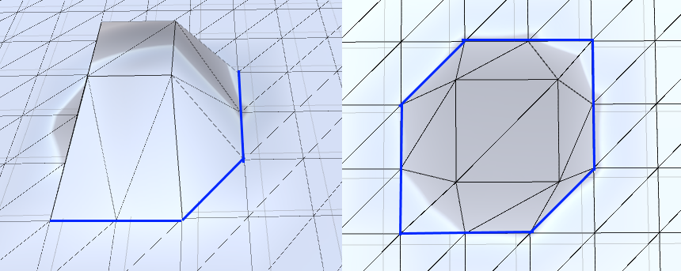
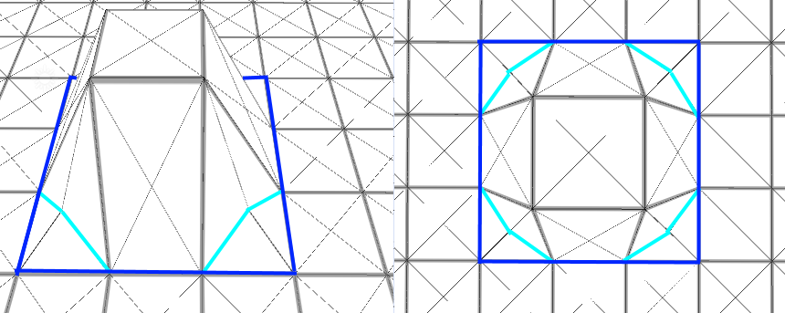
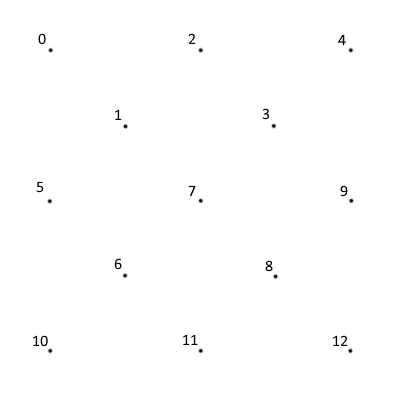

Mesh Generation
With a low-poly terrain mesh that uses 2 triangles per quad, you get inconsistent appearances depending on the slope. This is because of the orientation of the triangles in the mesh.
{kind=link}
My solution was to add a 5th vertex in the middle of each quad, making them out of 4 triangles instead of 2. The centre vertex’s height is the average height of it's surrounding verts, so it still has a low poly look and feel.
{kind=link}
The neat part is the way the mesh is put together. The vertices in a mesh are stored in a single-dimensional array. For a terrain mesh built from 2 triangle per quad, indexing the array is simple.
int getVert(int x, int z)
{
return x + (width * z);
}
But because I added an extra vertex in the middle of each quad, getting its index is a little more complicated. Knowing how the vertices are indexed makes it a little easier to understand, and when I was coming up with this I used a lot of doodles to help visualize things, making the math easier.
{kind=link}
As you can see, the middle vertices are indexed in a sawtooth pattern. The reason I indexed the midpoints this way was so you could simply add 1 or subtract 1 to get the midpoints below whatever (x, z) position you were currently looking at. Also because I wanted to easily be able to manipulate the terrain height during gameplay, I had to be able to index the points from their (x, z) positions. My getVert function ended up more complicated than I expected because of this.
int getVert(int x, int z, bool mid = false)
{
if (z != height)
{
if (mid == true)
{
return (2 * x) + (z * (((width + 1) * 2) - 1)) + 1;
}
else
{
return (2 * x) + (z * (((width + 1) * 2) - 1));
}
}
else
{
return x + (z * (((width + 1) * 2) - 1));
}
}
Instead of it being some simple math, I needed to handle the weird pattern and the special case of the last row. The last row doesn’t have midpoints to account for so the indexing increases by 1 on the corners instead of 2.